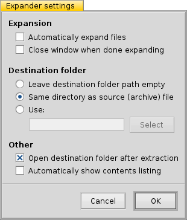

Expander
Expander
| Deskbar: | No entry, normally launched via double-clicking a supported file. | |
| Location: | /boot/system/apps/Expander | |
| Settings: | ~/config/settings/Expander_Settings |
Expander is a small tool to quickly unpack the most common archives, among them zip, gzip, bzip2, rar and tar.gz.
Just double-click an archive to see this simple interface:

| ALT S | will open a file dialog to find an archive to unpack. | |
| ALT D | will open a file dialog to set the destination. | |
| ALT E | will start the unpacking. It can be aborted with ALT K. |
You can toggle the display of the file listing by un/checking Show Contents or pressing ALT L.
Expander can only unpack whole archives.
You can't select individual files to expand or add/remove files from the archive.
You can't select individual files to expand or add/remove files from the archive.
or ALT P opens a preference panel that offers some useful settings to adjust Expander's behavior.
The options are all self-explanatory:
